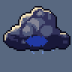
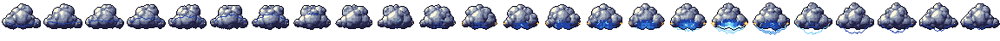
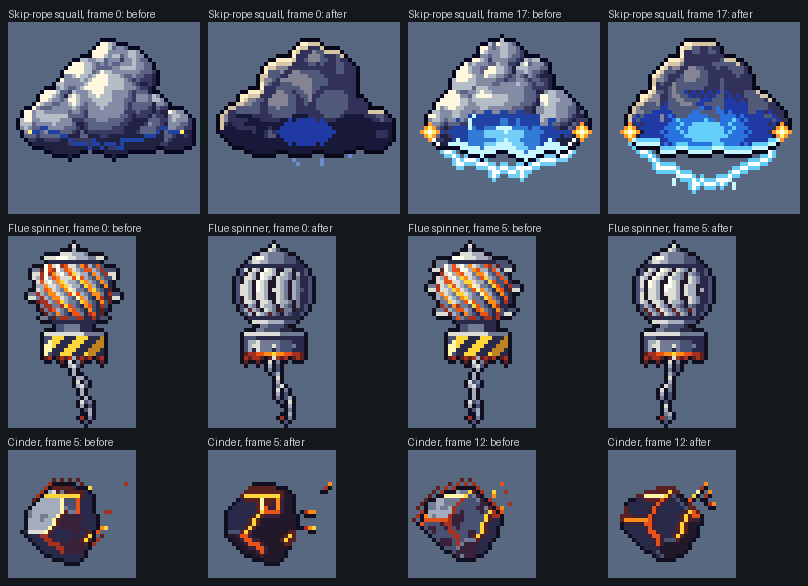
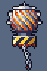
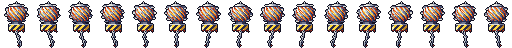
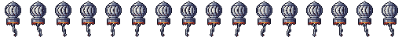
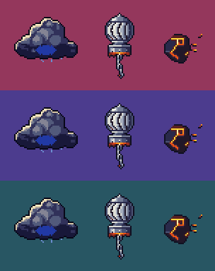

Skip-rope squall



The three final sheets before and after the clean-up. Drafts only, nothing here is wired into the game. Weak points and open choices: README.md in this folder.
Two frames of each kind. Left of each pair: the sheet before. Right: after.








One frame of each kind on a flat sky colour: dusk, moon, storm (top to bottom), two times size. The cloud is shown at rest.

No shade is computed per pixel any more. Cloud: every billow is three drawn discs (shadow, body, light) set at half-pixel steps and painted back to front, with a crease where one billow sits on another. Globe: one flat tone per blade. Coal: one flat tone per facet. Rules after that: no orphan pixels, no 1 px spurs or notches on the silhouette, rim light only on edges that face the light. Shadows run to cold indigo, lights to warm cream.
Darker body with a heavy indigo underside (lower third), a warm lit rim on the upper left silhouette, a dark outline, and a blue charge glow in the belly that never goes fully out and grows to the strike. The rope is now a trail of faint 2 px dashes that travel along it, hangs only below the base (it no longer crosses the cloud face), thickens and turns blue as the charge builds and is a solid white bolt on the strike frame only.
Twelve bowed vertical blades on a sphere with true foreshortening (blades narrow toward both edges), steel greys only, a hard highlight that stays fixed to the light and only the leading edges of the blades catch, black slots. Heat is an accent: the torn bottom edge of the collar and a warm tint low in the slots. No dither. The blades advance 5 pitches in 16 frames, so no globe frame repeats inside the loop. Chain: four links of 5 px (ring, bar, ring, bar) with a hole in each ring; each link lags the one above.
Facets are filled with coal black and cold dark only; grey is left for thin sheen lines on facet edges. More cracks, never dimmer than orange red, each with a warm plum or red border. The outline itself glows red beside a hot crack (replaces the dither halo). Sparks are 2 to 3 px trails (pale core, orange body, red tail) with a dark keyline behind and under them.
Frame sizes, frame counts, ticks per frame, hit boxes, two palettes of 15 colours, JSON format, one strike frame per loop.
Gum Trip moving hazards, hand clean-up pass. Measured by draw_moving_hazard_final2.py from the sheets it wrote.
Tiles are 16 x 16. Raw = non-empty tiles over all frames; unique = distinct after removing exact duplicates;
with flips = distinct when horizontal and vertical mirror copies also count as duplicates.
Loop seam = pixels that differ between the last frame and frame 0, beside the same count for the other
neighbouring frame pairs (mean and largest). A seam inside that range means no pop.
Stray pixels = opaque pixels whose colour touches no pixel of the same colour, mean per frame.
Frame size 48 x 48 px, 24 frames in one row (sheet 1152 x 48), 4 ticks per frame (15 per second), loop 96 ticks = 1.60 s. Unchanged.
Palette "storm": 15 of 15 colours used in this sheet, plus transparent
Sprite columns 3 (16 px wide), 3 tiles tall
Tiles raw 214, unique 203, unique with flips 203
Opaque bounding box over all frames x 2..47, y 3..42
Hit box x 7..42, y 8..32 (36 x 25), relative to the frame, unchanged: the cloud body only (user decision); the trail below the base and the flank sparks do not hurt. 69 % of the box is covered by the body in every frame.
Loop seam 256 px; other neighbouring frames mean 294 px, largest 605 px
Stray pixels per frame: 3.5 (old sheet 24.5)
Distinct frames in the loop: 24 of 24
Gif frame time 70 ms (game 66.7 ms; gif timing has 10 ms steps)
Flash: one strike per loop, at frame 17, shown for 4 ticks (67 ms). One loop is 96 ticks, so 0.625 flashes per second per cloud (limit asked: under 3).
Flash size: 83 pale-cyan or white pixels in the strike frame = 3.6 % of the 48 x 48 frame, 8.3 % of its opaque pixels. No other frame has more than 0. The frame before has 0, the frame after 0: never two bright frames in a row.
Same check by brightness (pixels above luma 200, which also counts the cream rim): strike frame 108 = 4.7 % of the frame; frame before 18, frame after 20, largest other frame 23. No full-sprite white frame.
Charge: frames 4..16 build (52 ticks), frame 17 strikes, frames 18..20 fade, frames 21..23 and 0..3 rest (a small blue glow stays in the belly).
Several clouds on screen: start them at the same loop phase or at phases at least 8 frames (32 ticks) apart. With 2 clouds that is at most 1.25 flashes per second.
Frame size 32 x 48 px, 16 frames in one row (sheet 512 x 48), 4 ticks per frame (15 per second), loop 64 ticks = 1.07 s. Unchanged.
Palette "hot_metal": 13 of 15 colours used in this sheet, plus transparent
Sprite columns 2 (16 px wide), 3 tiles tall
Tiles raw 96, unique 91, unique with flips 91
Opaque bounding box over all frames x 6..26, y 1..47
Hit box x 8..24, y 5..21 (17 x 17), relative to the frame, unchanged: the globe, 1 px inside its steel; collar and chain do not hurt. 96 % of the box is covered by the body in every frame.
Loop seam 179 px; other neighbouring frames mean 194 px, largest 215 px
Stray pixels per frame: 37.7 (old sheet 67.2)
Distinct frames in the loop: 16 of 16
Gif frame time 70 ms (game 66.7 ms; gif timing has 10 ms steps)
No flash. Hot colours (orange red to pale yellow) per frame: 9..9 px, all on the collar edge.
Spin: 5 blade pitches per loop (12 blades). 5 and 16 share no factor, so the globe shows 16 different blade positions; the loop closes because the blades are alike.
Frame size 32 x 32 px, 24 frames in one row (sheet 768 x 32), 3 ticks per frame (20 per second), loop 72 ticks = 1.20 s. Unchanged.
Palette "hot_metal": 11 of 15 colours used in this sheet, plus transparent
Sprite columns 2 (16 px wide), 2 tiles tall
Tiles raw 96, unique 96, unique with flips 96
Opaque bounding box over all frames x 2..31, y 7..28
Hit box x 5..20, y 11..25 (16 x 15), relative to the frame, unchanged: the coal, 2 px inside its widest tumble; sparks do not hurt. 98 % of the box is covered by the body in at least one frame of the tumble.
Loop seam 188 px; other neighbouring frames mean 192 px, largest 244 px
Stray pixels per frame: 6.9 (old sheet 12.8)
Distinct frames in the loop: 24 of 24
Gif frame time 50 ms (game 50.0 ms; gif timing has 10 ms steps)
No flash: ember cracks breathe twice per loop (1.67 per second), each crack with its own phase; yellow or pale-yellow pixels per frame 7..35 of 1024 (3.4 % at most).
Grey pixels (steel mid and lighter) per frame: 0..0.
Total unique tiles for the three kinds: 203 + 91 + 96 = 390 (with flips 390). Sheets before this pass: 212 + 90 + 96 = 398.
Palettes: 2 for the three kinds. "storm" (A) and "hot_metal" (B and C). RGB after 5-bit rounding:
storm 8,8,24 24,24,57 49,49,90 82,90,123 132,132,148 214,198,165 255,239,198 33,57,165 41,115,222 99,206,247 198,247,255 255,255,255 255,239,115 255,148,41 107,140,206
hot_metal 16,16,33 41,41,74 74,82,115 115,123,148 165,173,189 222,222,214 255,255,239 90,33,33 165,49,33 231,82,24 255,140,24 255,214,57 255,247,173 33,24,41 57,33,57
Mood colours in on_moods_2x.png: Dusk (148, 55, 92), Moon (76, 60, 142), Storm (40, 86, 99).
Gif background (88, 104, 128).